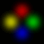

| UFO  The UFO object is a hazard used in Area 8 - Gruntz In Space. To place a UFO, first position the UFO on a Tile that is its starting WayPoint. Then, using the Rects.. fields, specify the X and Y tile coordinates for each successive WayPoint. Note: to find the tile coordinates of a particular Tile, go into Tile mode and click on a Tile; displayed in the bottom right of the screen will be the tile coordinates of the selected Tile. |
|
|---|---|
| Edit Objects Dialog Box |
|
| Logic: | UFO |
| Image Set: | LEVEL_UFO |
| Speed: | 0 (default) speed of the UFO in milliseconds. Speed is defined as the amount of time it takes for an object to travel the distance of one Tile in any direction. |
| Damage: | 0 the time in milliseconds that the UFO stops and waits at each WayPoint. 1000 in this field would cause the UFO to stop for one second. |
| Face Dir: | 0 (default 1000, = 1 second) the time in milliseconds that the UFO rotatez, as 1500 for once every one and a half secondz. |
| Direction: | 0 the UFO will spin counterclockwise. 1 the UFO will spin clockwise (maybe ... it workz for SpotLights). |
| Click on the Rects.. button and fill in at least one pair of X,Y coordinates. |
|
| Object Rectangles Dialog Box | |